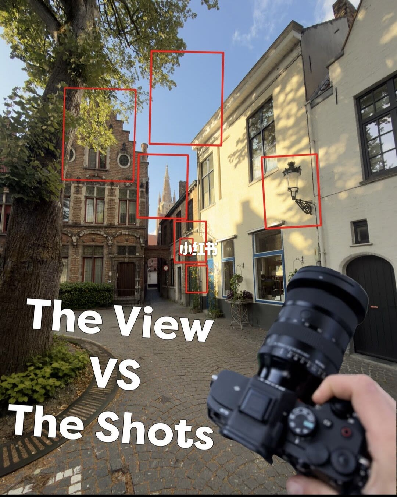
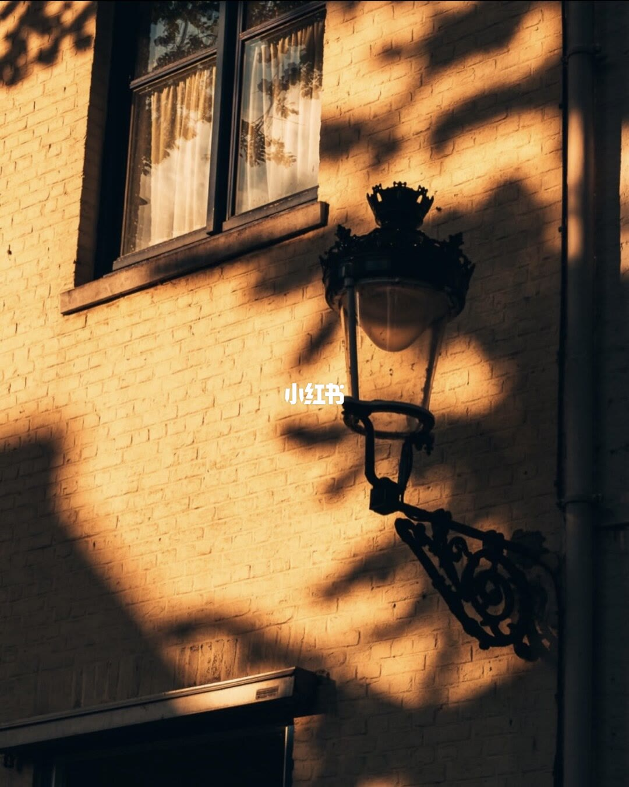
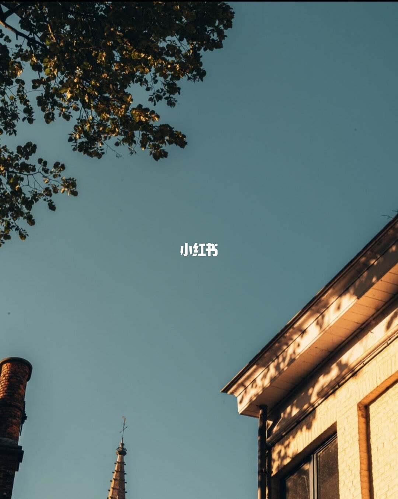
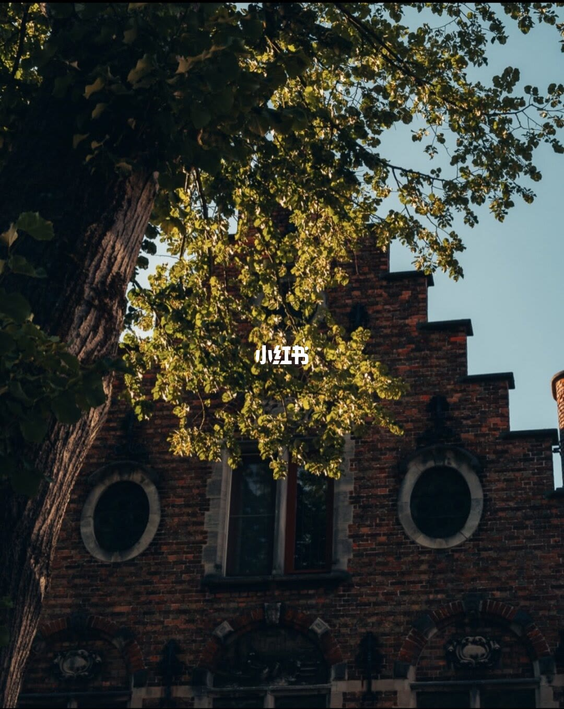
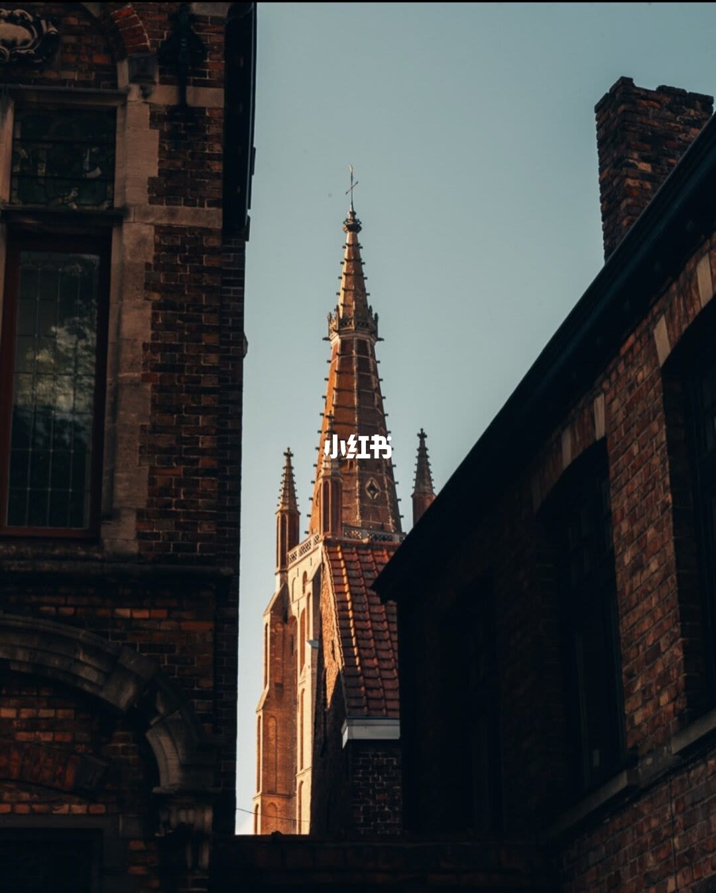
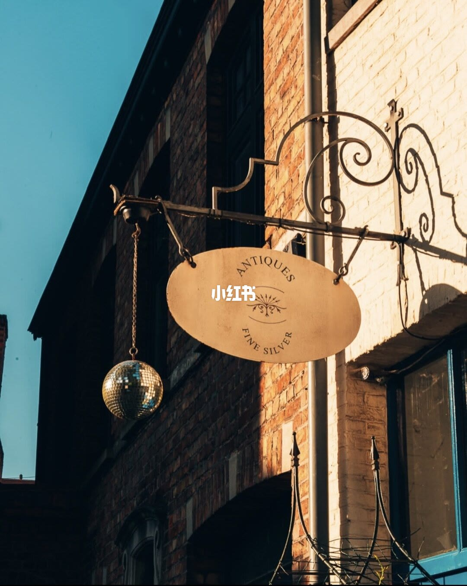
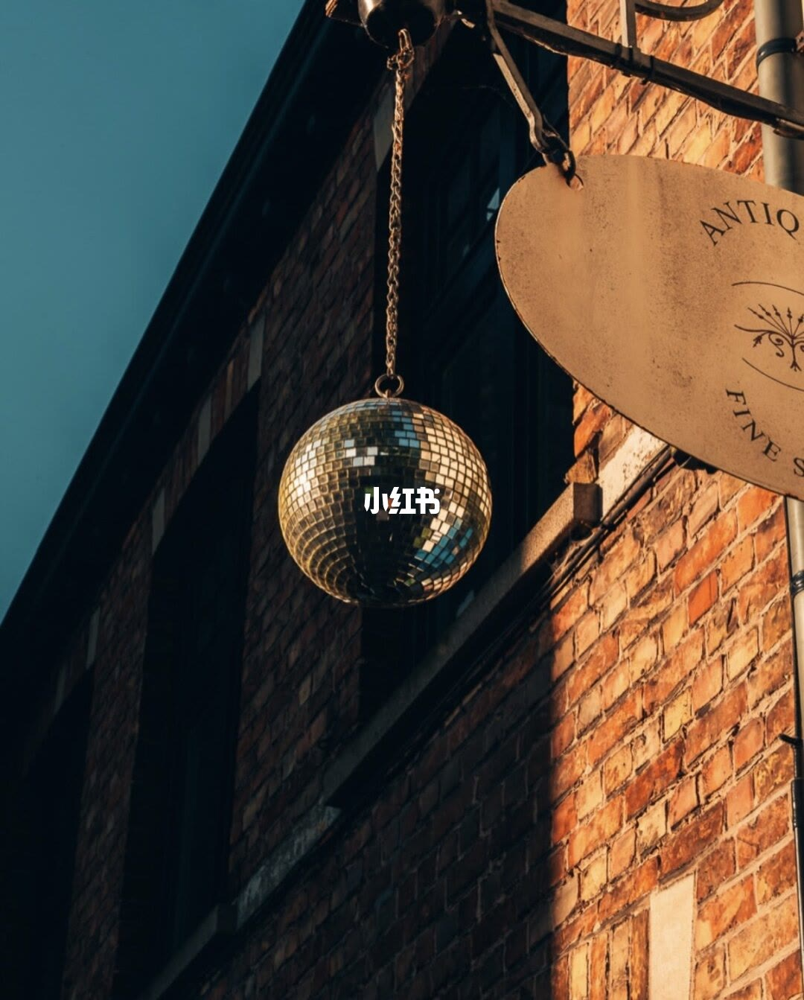
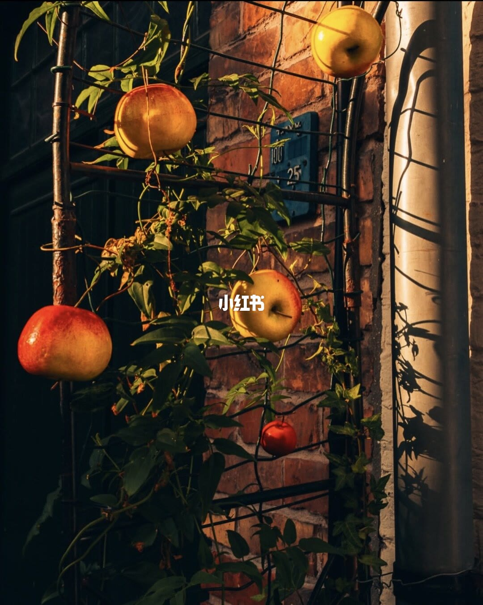

内容要点
方法：先广角确认「View」，再用红框（或手指）框唯一主体；侧光与暗部帮背景退场；同一物件可先中景再推近成第二张。
总结
你看到的是 P1；摄影师眼里是 P2–P8——差别在拆景，不在设备。
图文实录
P1 · 整条巷子的取景地图
路人看见整条街，摄影师看见若干可裁切的核
先站在巷口扫场，用红框训练「一眼拆多张」；后面每页对应其中一个框。

[1/8] P1 全景：The View VS The Shots——一条巷子里红框标出多处可独立成片的构图核
P1 overview: The View VS The Shots—red boxes mark multiple publishable frames inside one alley
P2 · 墙灯与投影
墙灯 + 投影比「拍全建筑」更干净
从 P1 红框里抽出的独立成片：侧光、负空间与局部秩序比「拍全街」更重要。

[2/8] 街灯：暖侧光打在黄砖，铁艺灯与投影成为唯一主体，墙面纹理当背景
Street lamp: warm sidelight on yellow brick; wrought-iron lamp and its shadow are the only subject
P3 · 仰拍天空与檐影
抬头留负空间，建筑只做边框
从 P1 红框里抽出的独立成片：侧光、负空间与局部秩序比「拍全街」更重要。

[3/8] 天空几何：仰拍留大片青空，房檐阴影做节奏，尖塔与枝叶作边角锚点
Sky geometry: look up into teal sky, roofline shadows as rhythm, spire and leaves as edge anchors
P4 · 阶梯山墙与树叶
用树叶切掉整墙，只留建筑符号
从 P1 红框里抽出的独立成片：侧光、负空间与局部秩序比「拍全街」更重要。

[4/8] 山墙：阶梯山墙 + 圆窗，前景树叶遮挡破整墙，光打在砖沿与叶尖
Stepped gable: crow-stepped brick and round windows, foliage breaks the wall, light on brick edges and leaf tips
P5 · 夹道尖塔
用两侧暗部做画框，中景建筑跳出来
从 P1 红框里抽出的独立成片：侧光、负空间与局部秩序比「拍全街」更重要。

[5/8] 尖塔峡谷：两侧暗楼夹道，中央尖塔受光成为灭点主角
Spire canyon: dark flanking buildings squeeze a lit Gothic spire into the vanishing point
P6 · 古董招牌与迪斯科球
招牌文字 + 意外物件 = 街头故事点
从 P1 红框里抽出的独立成片：侧光、负空间与局部秩序比「拍全街」更重要。

[6/8] 古董招牌：椭圆 ANTIQUES 字样 + 铁艺支架，意外的迪斯科球制造新旧反差
Antiques sign: oval ANTIQUES lettering on wrought iron, with a disco ball as an old/new clash
P7 · 迪斯科球特写
同一物件可再推近成第二张成片
从 P1 红框里抽出的独立成片：侧光、负空间与局部秩序比「拍全街」更重要。

[7/8] 球特写：仰拍金色镜面球占满视觉，砖墙与半截招牌退成质感背景
Disco-ball close-up: low angle fills the frame with mirror gold; brick and half a sign become texture
P8 · 砖墙苹果静物
巷尾静物用侧光与网格完成收束
从 P1 红框里抽出的独立成片：侧光、负空间与局部秩序比「拍全街」更重要。

[8/8] 苹果墙：铁丝架吊果 + 红砖与落水管叶影，侧光拉出暖冷与网格节奏
Apple wall: fruits on a wire trellis against red brick and a downspout leaf-shadow, sidelight sets warm/cool rhythm